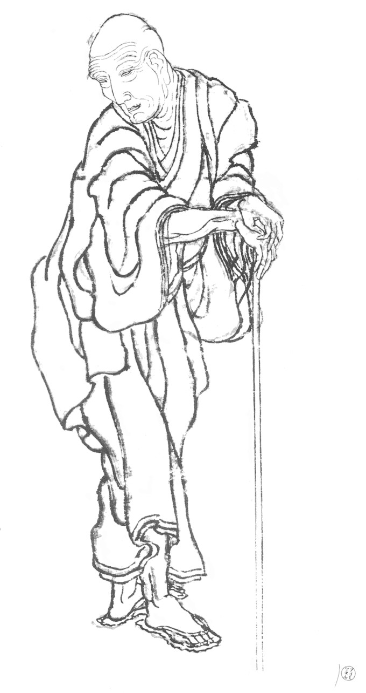
Katsushika Hokusai "活しか北斎" (1760–1849) va ser un pintor i gravador japonès del període Edo, mestre de l'art ukiyo-e (gravats del "món flotant").
És mundialment conegut per la sèrie de gravats "Trenta-sis vistes del Mont Fuji" (c. 1830-1833), que inclou la seva obra més cèlebre: "La gran ona de Kanagawa".
La seva obra va influir enormement en l'art occidental, especialment en l'impressionisme. Va ser un artista molt productiu que va pintar fins a la seva mort als 88 anys.
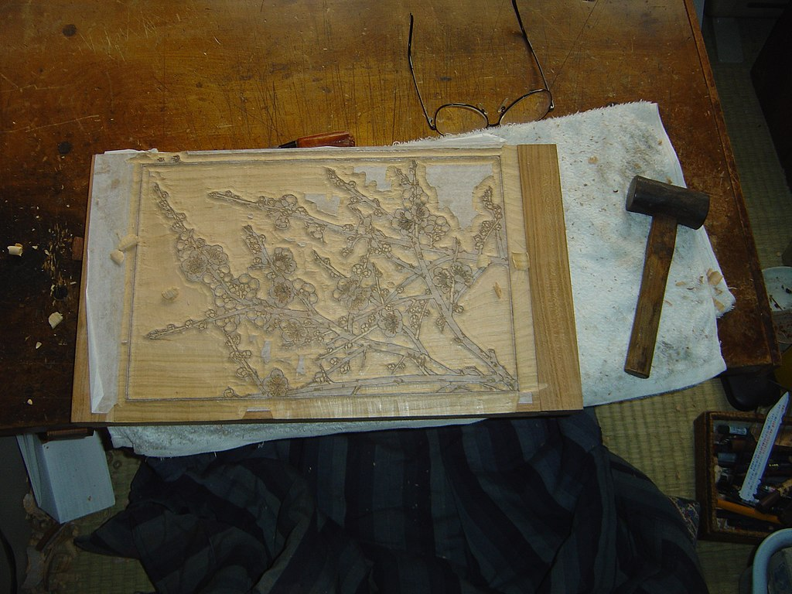
Planxa d'impressió ukiyo-e
Els ukiyo-e, en japonès nikuhitsu ukiyo-e (肉筆浮世ー絵), eren obres en què el pintor feia servir pinzells directament sobre paper o seda.
Aquests dibuixos permetien veure l'obra final íntegrament, encara que, tret de la forma de les línies i l'arranjament del color, es perdien durant el procés del dibuix.
Finalment, ja amb les planxes necessàries (usualment se n'utilitzava una per cada color necessari), un surishi (すりし), o impressor, portava a terme el treball d'impressió col·locant el paper d'estampació sobre les consecutives planxes.
La impressió es realitzava fregant una eina anomenada baren (ばれん) sobre el dors de les fulles. Aquest sistema podia produir variacions de tonalitat en les estampes.
D'una sèrie de planxes podien fer-se una gran quantitat de còpies, de vegades comptades en milers, fins que les planxes es desgastaven.
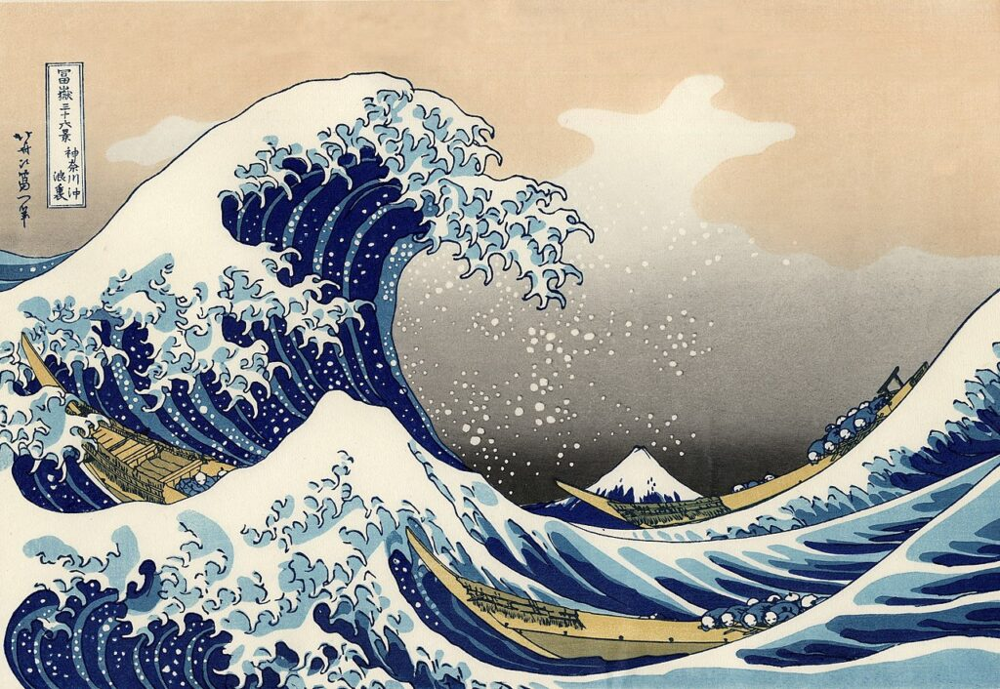
La gran ona de Kanagawa - 神奈川沖波裏
Una de les pintures més conegudes del pintor.
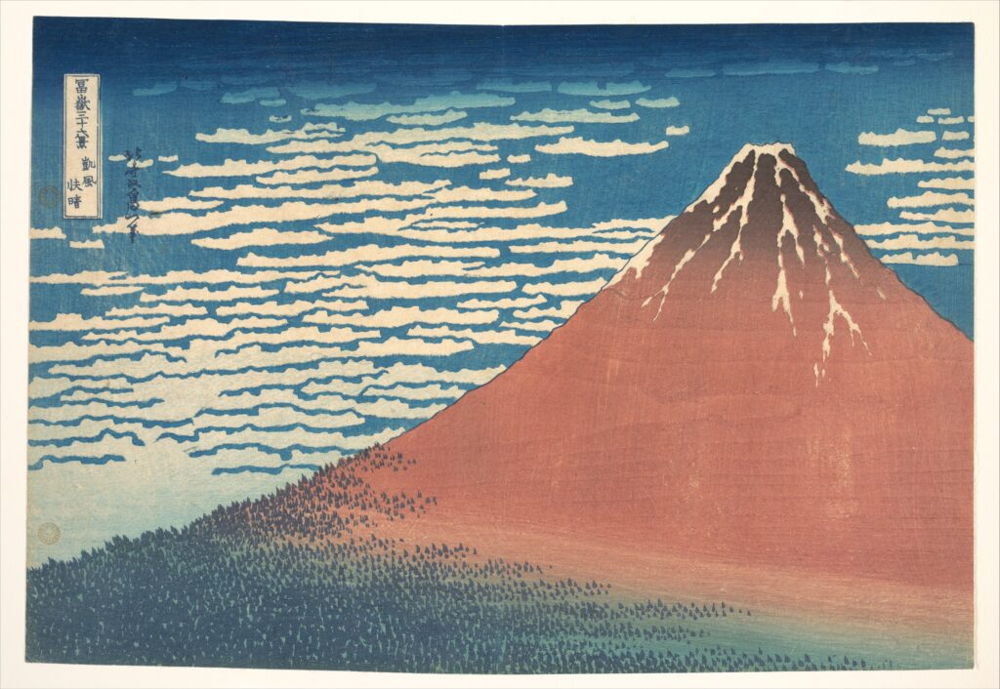
Vent suau, matí clar (Fuji vermell) - 凱風快晴
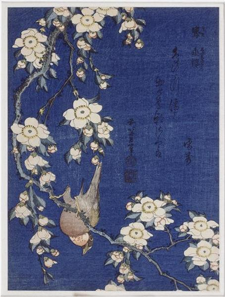
Camallarg i Cirerer Ploraner - ウグイス賭垂れー桜
Nota: El nom en japonès fa referència al cirerer ploraner (shidare zakura - 垂れー桜).
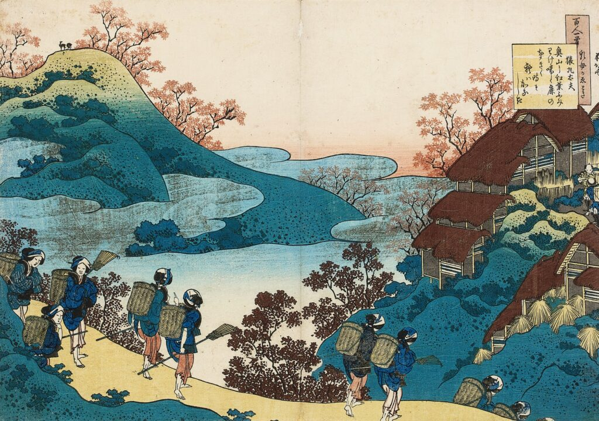
Sarumaru Dayu - 猿丸太夫
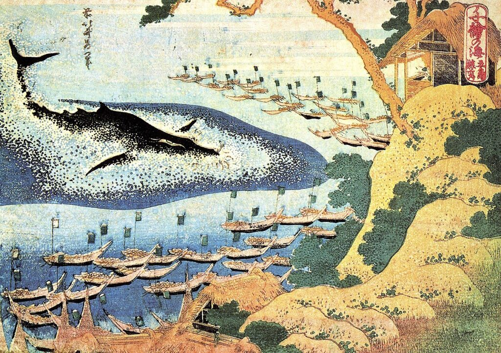
Oceans de la Saviesa - 千絵の海
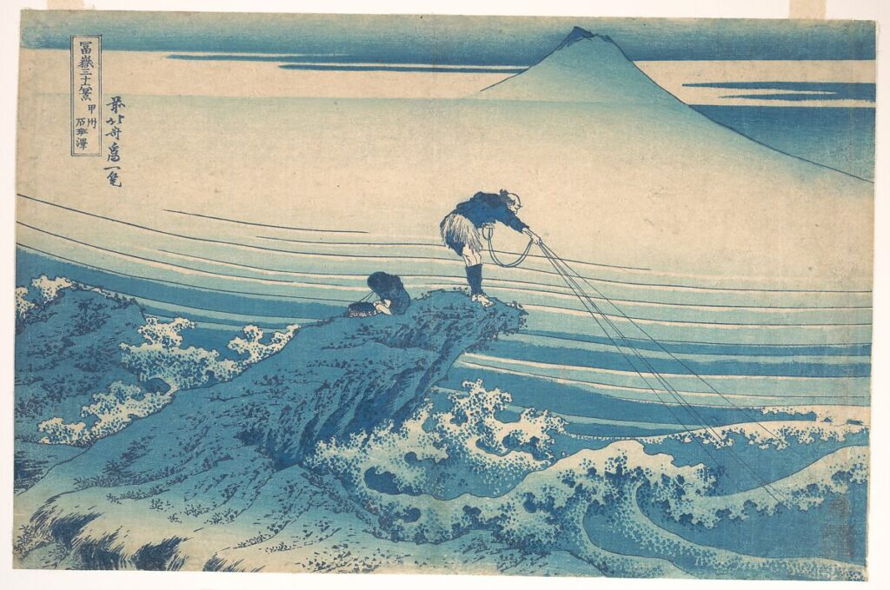
Kajikazawa a la província de Kai - 甲州石班澤
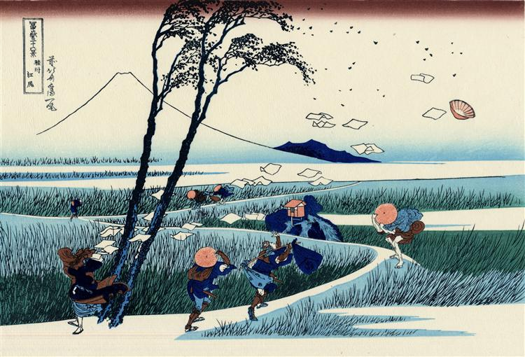
Ejiri a la província de Suruga - 駿州江尻
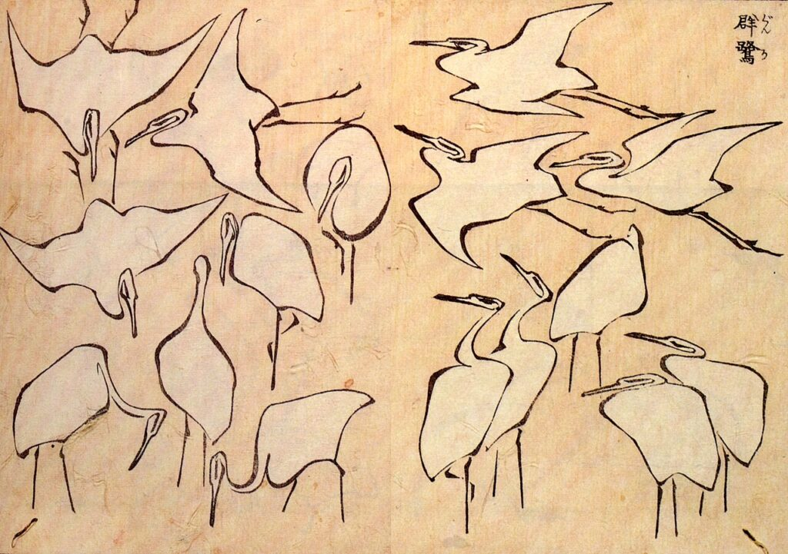
Manual de Dibuix Ràpid - 略画早指南
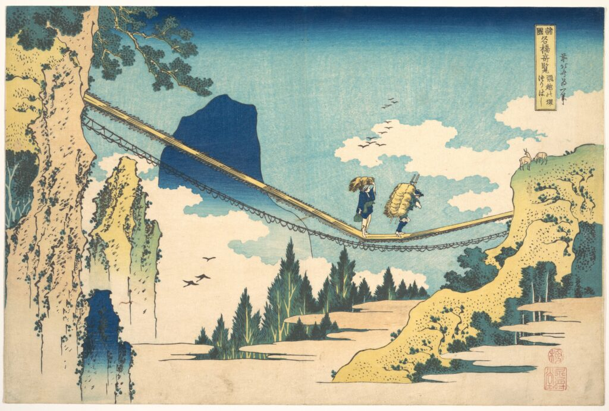
El Pont Penjant a la Frontera de les Províncies de Hida i Etchū - 飛越の堺つりはし
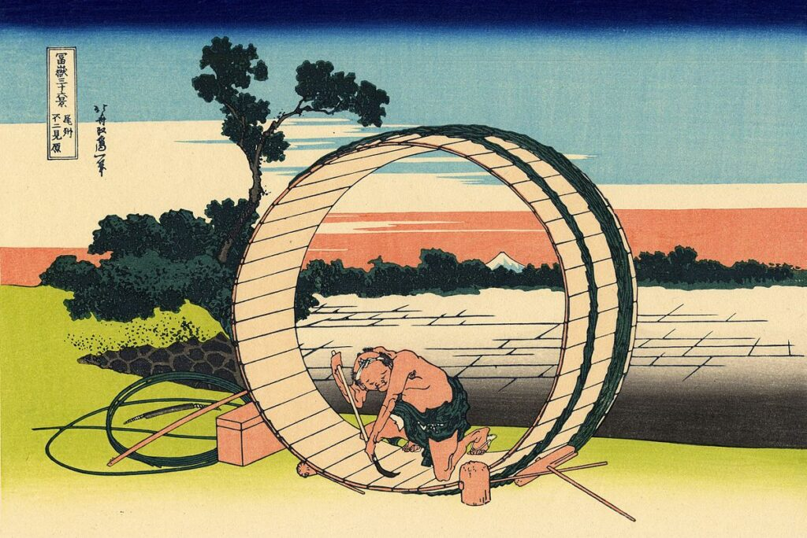
Vista del Fuji des d'un camp a la província d'Owari - 尾州不二見原